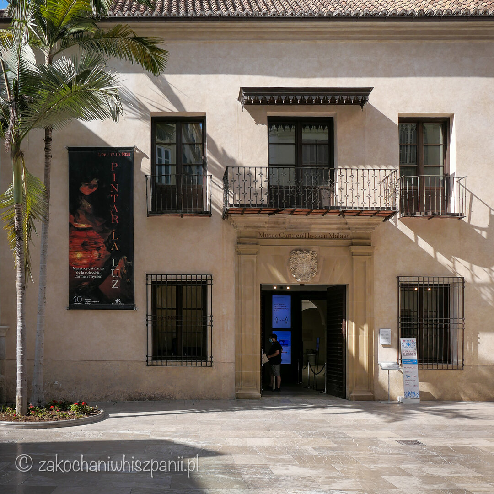

Muzeum Carmen Thyssen Co warto zobaczyć w Maladze?
Kim jest Carmen Thyssen znana również jako Carmen Cervera? Carmen jest jedną z najbardziej znanych postaci w hiszpańskim życiu kulturalnym. Pochodzi z zamożnej rodziny, jej ojciec kolekcjoner dzieł katalońskich artystów. Carmen to piąta żona barona Hans Heinrich Thyssen-Bornemisza. Telewizja Tele 5, nakręciła o życiu Carmen Thyssen mini serial.

Jakie dzieła możesz zobaczyć w Muzeum Carmen Thyssen w Maladze?
Muzeum działa od marca 2011 roku w budynku dawnego pałacu Palacio de Villalon, przy calle Compańia 10. Znajdziesz tu dzieła z XIX wieku. Przeważa malarstwo hiszpańskie, głównie andaluzyjskie. Większość obrazów pochodzi z prywatnej kolekcji Carmen Thyssen. Dzieła, które możesz tu zobaczyć to m.in. El Refresco, artysty Jose Maria y Lopez, Patio interior, Sevilla, malarza Manuel Garcia Rodriguez, Plaza de la Alfalfa Joaquina Turina y Areal. Pozostałe dzieła przedstawiają pejzaże, dziedzińce (patia) i ogrody andaluzyjskie. Znajdują się tu również obrazy poświęcone tematyce flamenco.

Już nie możesz doczekać się wycieczki do Muzeum Carmen Thyssen? Na stronie muzeum czeka na Ciebie możliwość wirtualnego zwiedzania placówki. Możesz odbyć wycieczkę po każdym z pomieszczeń muzeum. Niezależnie od tego czy jesteś fanem sztuki czy też nie, warto odwiedzić to Muzeum choćby ze względu na taras widokowy. W trakcie naszej ostatniej wizyty taras był zamknięty, ale byliśmy tu kilka lat temu i mamy z tego miejsca miłe wspomnienia i zdjęcia z widokiem na centrum Malagi.
Gdzie znajduje się muzeum Carmen Thyssen? Informacje praktyczne
Na parterze jest sklepik muzealny.
W muzeum jest taras z kilkoma stolikami, warto wcześniej sprawdzić kiedy jest czynny.
Bilety
- Bilet normalny 10 euro, ulgowy 6 euro.
- Wejście darmowe w każdą niedzielę po godzinie 16:00
Godziny otwarcia
- Muzeum czynne jest od wtorku do niedzieli od 10:00 do 20:00
- Nieczynne w poniedziałki i święta 25 grudnia i 1 stycznia
Adres
Museo Carmen Thyssen Málaga, Plaza Carmen Thyssen - C/Compañía, 10, 29008 Málaga
Najnowsze wpisy


Tagi